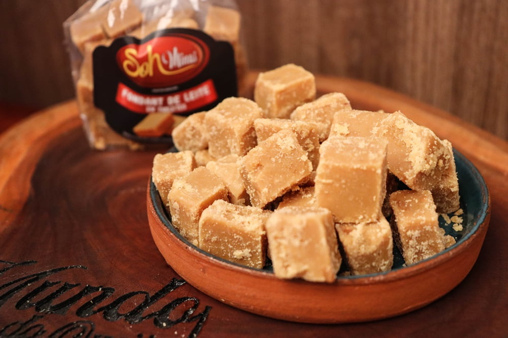
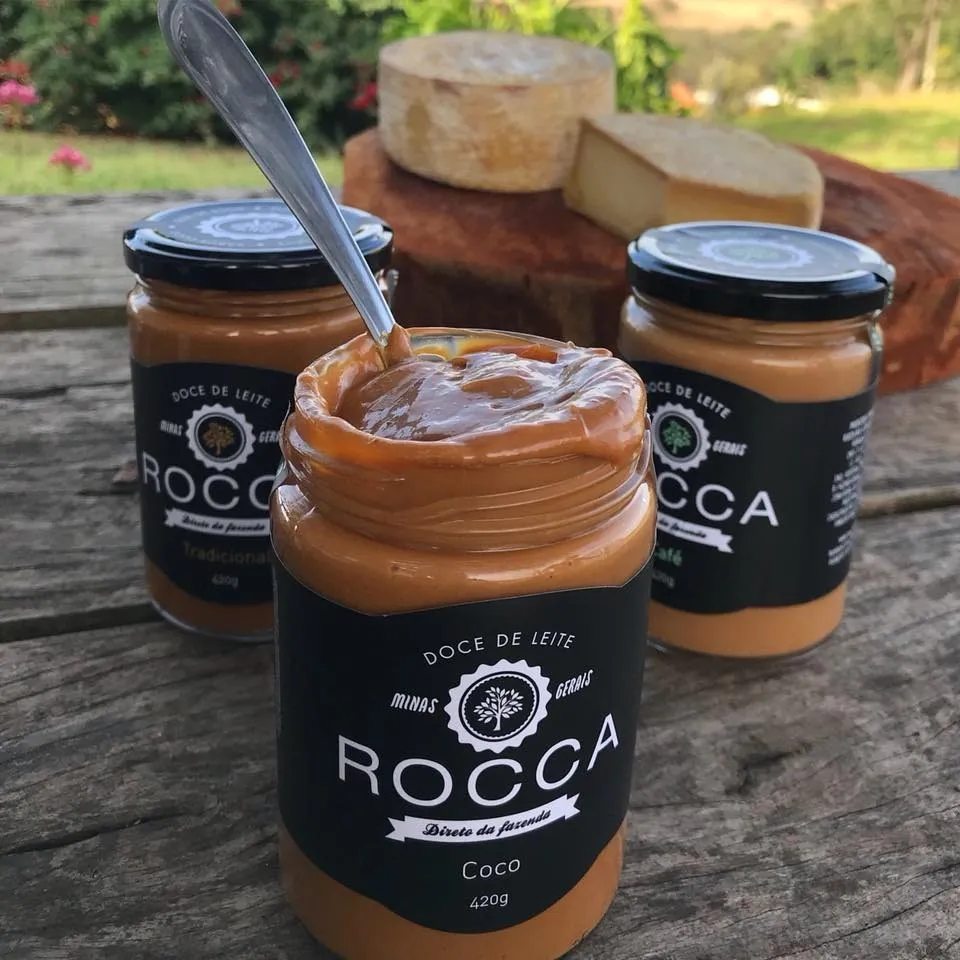
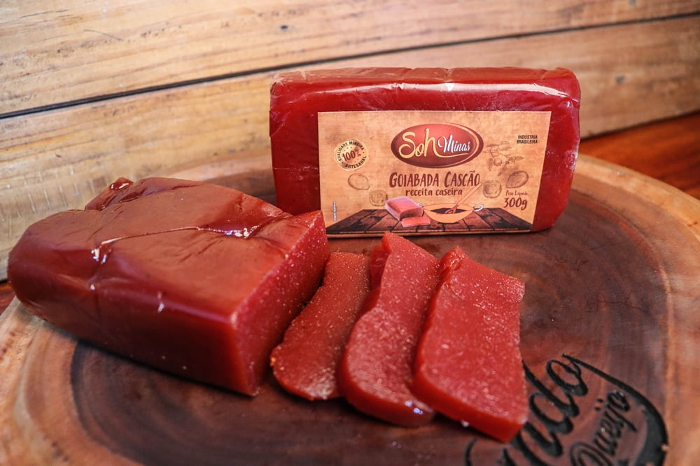
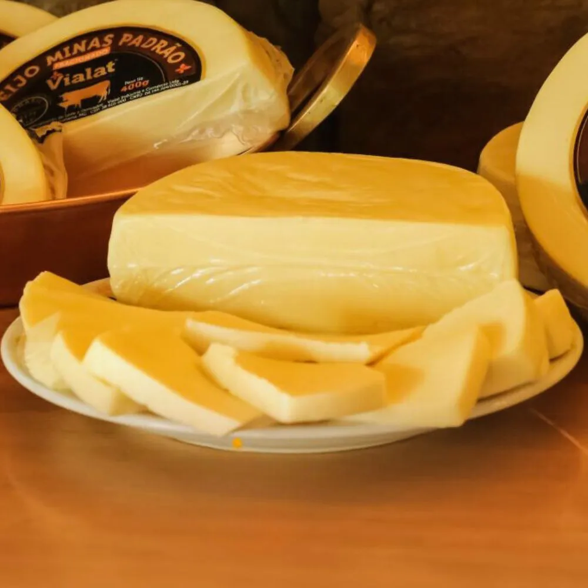
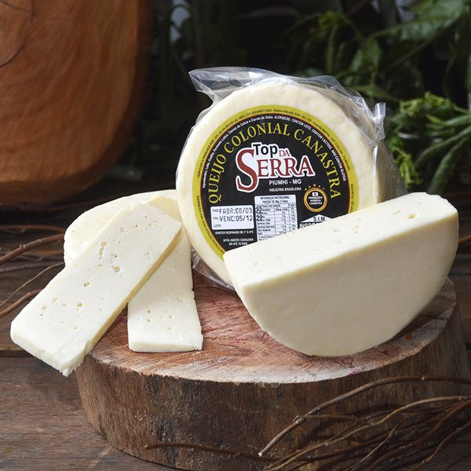
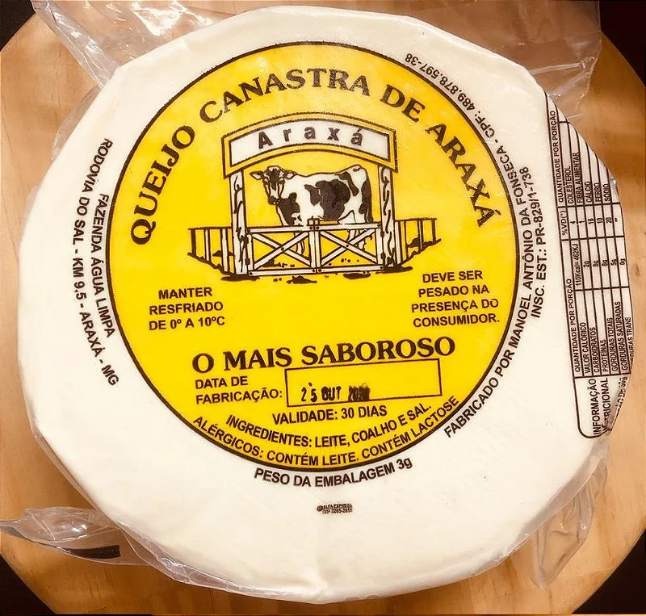
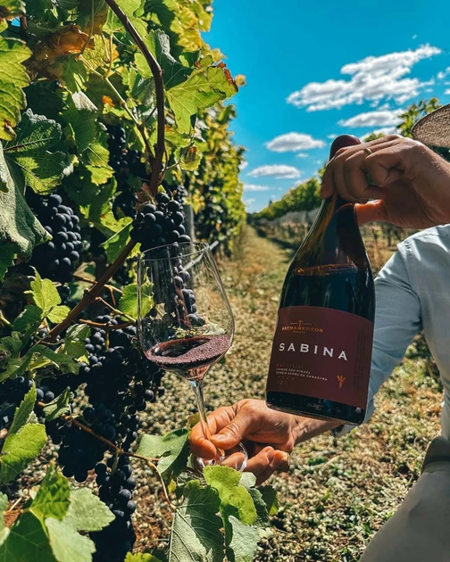
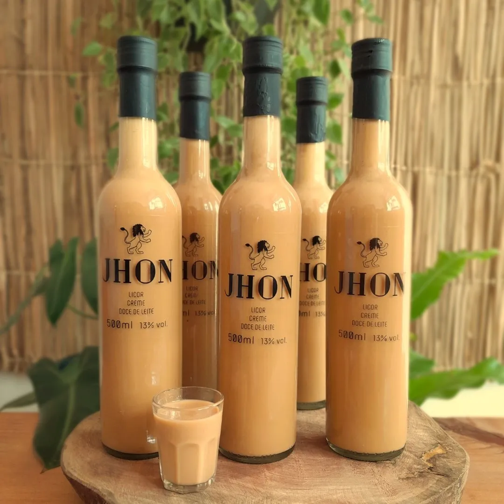
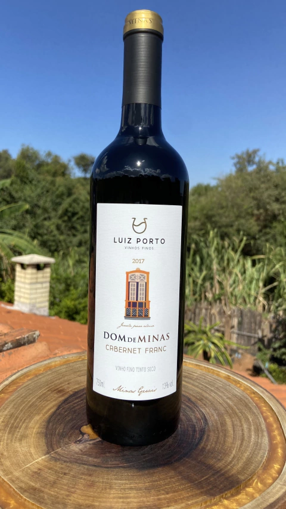

Produtos
Produtos

Doce de Leite Mineiro em Tabletes SOH MINAS
200g

Doce de Leite Rocca Tradicional
450g

GOIABADA EM BARRA ARTESANAL SOH MINAS
300g

Queijo Minas Padrão
400g

Queijo Colonial Top da Região da Serra da Canastra
600g

Queijo canastra araxá
1300g

Sacramentos Sabina Syrah
750ml

Licor de Doce de Leite Jhon
500ml

Vinho Fino Cabernet Franc
750ml